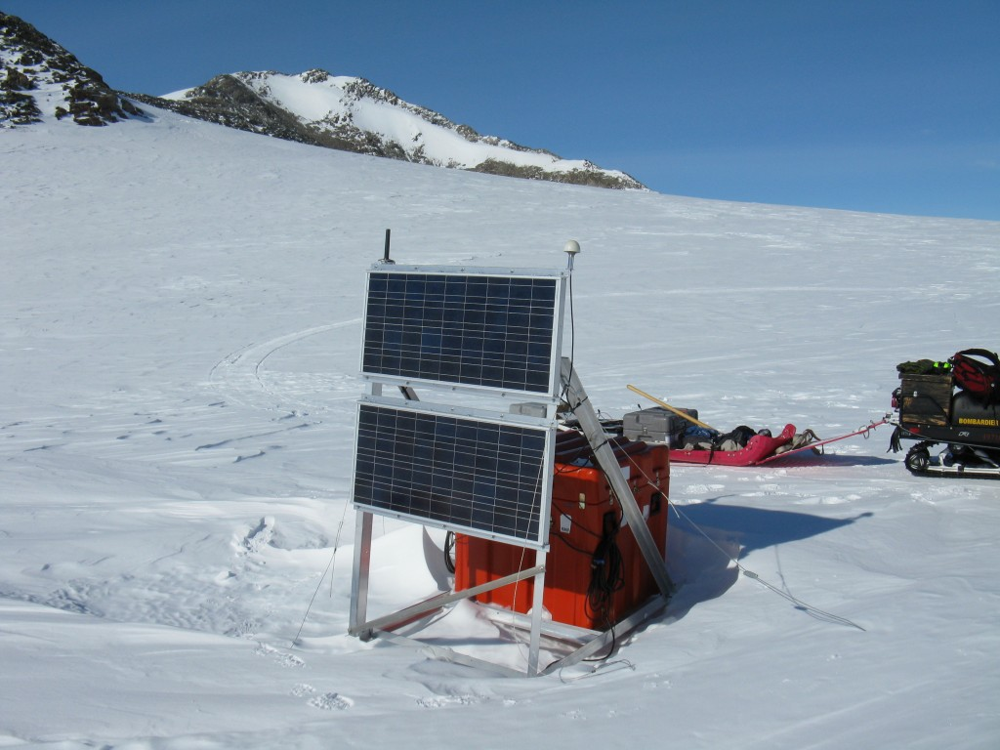

Back to all sites
Union Glacier
| Station ID | UNGL |
|---|---|
| Coordinates | S 79.7747, W 82.524 |
| Installed | 2010-2011 season |
| Former Projects | Former Names: |
| Former Names | Transportation: |
| Transportation | Snow mobile |
| Nearest Hub | <5km to ALE Union Glacier Camp |

Closest operations HUB: <5km to ALE Union Glacier Camp
A large, heavily-crevassed glacier which receives the flow of several tributaries and drains through the middle of the Heritage Range, Ellsworth Mountains. The glacier drains from the plateau at Edson Hills on the W side of the range and flows E between Pioneer Heights and Enterprise Hills. Union Glacier was mapped by USGS from surveys and USN air photos, 1961-66. The name was applied by US-ACAN in association with the name Heritage Range (https://data.aad.gov.au/aadc/gaz/scar/display_name.cfm?gaz_id=133062).